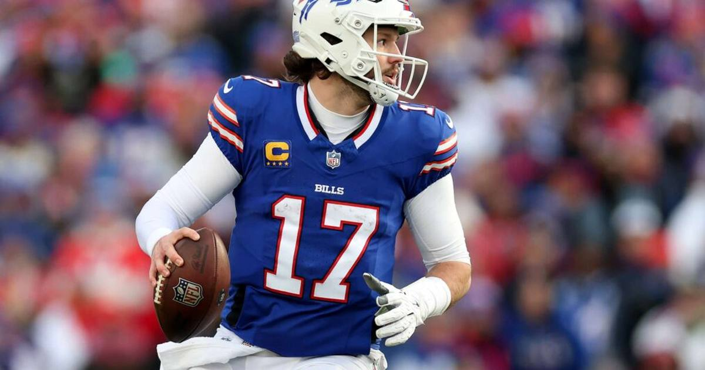

Ravens-Bills Over 54.5: Lamar Is Back, and Both Offenses Can Score
Lamar Jackson returns for Baltimore, Josh Allen is rolling for Buffalo, and the total is 54.5 for a reason. Take the over in the Sunday 1 p.m. window.

The game slip
Matchup: Baltimore Ravens (4-3) at Buffalo Bills (5-1)
Kickoff: Sunday, November 1, 1:00 PM ET — CBS, Highmark Stadium, Orchard Park
Line: Bills -3 (-112) | Total 54.5 (Over -108) | Moneyline: Ravens +145, Bills -175 (via BetMGM, USA TODAY Sportsbook Wire)
Ravens injury report: OUT — S Jaylinn Hawkins (knee), G Olaivavega Ioane (knee). Questionable — RB Adam Randall (neck), CB T.J. Tampa (knee). Lamar Jackson carries no designation after a full week of practice and will start after missing three games with a high-ankle sprain.
Bills injury report: OUT — WR Tyrell Shavers (knee). Questionable — WR DJ Moore (shoulder), TE Dalton Kincaid (chest), RT Spencer Brown (back), CB Dee Alford (ankle), DT Greg Gaines (calf), LB TJ Parker (knee). DT Ed Oliver (knee) returns with no designation after a full week of practice.
Storylines driving the bet:
1. Jackson returns with a 119.6 passer rating across his four 2026 appearances before the injury — and Baltimore's offense scored just 23 combined points in its last two games without him. The upgrade at quarterback is enormous.
2. Buffalo owns the league's top scoring offense and comes off its bye, with Josh Allen posting a 102.1 rating plus eight rushing touchdowns already this season. James Cook adds 627 rushing yards and six scores.
3. The defenses have holes: Buffalo is giving up 28.5 points a game, and Baltimore's secondary is down two contributors. This total didn't get to 54.5 by accident.
The bet
Over 54.5 (-108). This is a game-prop play, not a side — and that's deliberate, because picking a winner here means guessing how mobile Lamar Jackson looks in his first game back. The over doesn't care. It just needs both offenses to do what they're built to do: Allen and Cook against a thin Baltimore secondary, Jackson and Derrick Henry against a Buffalo defense that gives up points. Buffalo's last two wins came by exactly three points, which is why I'm not touching the spread — but 55 combined points between these two attacks, in a dome-free November afternoon in Orchard Park, is a fair ask.
The honest caveat: if Jackson's ankle limits him to a pocket passer — he ran for just 71 yards across four games following his hamstring return last season — Baltimore's ceiling drops, and a grind-it-out Bills win could land this under. And Buffalo's questionable list is long enough that a late inactive or two could thin the offense. Still, with two top-ten attacks and two defenses that bleed points, the over is the cleanest way to play this game.
If gambling stops being fun, call 1-800-GAMBLER.
Sources: USA TODAY Sportsbook Wire — Ravens at Bills odds, The Sport Stack — Ravens vs. Bills prediction and injury report, OddsIndex — Ravens vs. Bills preview